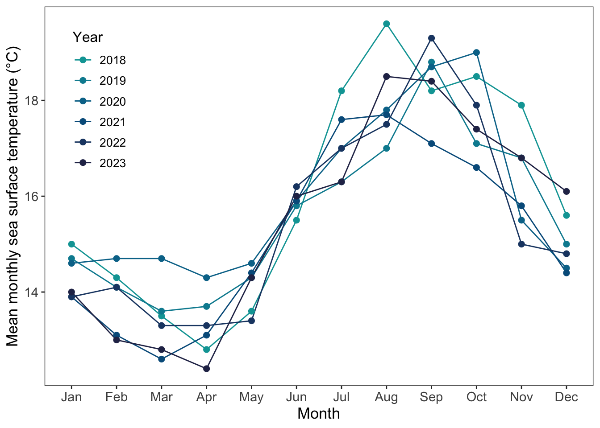

# reading in packages
library(tidyverse)
library(here)
library(gt)
library(janitor)
library(readxl)
library(dplyr)
library(MuMIn)
library(DHARMa)
library(lubridate)
library(ggeffects)
# reading in data set
sst <- read_csv(here("data", "SST_update2023.csv"))
nest_boxes <- read_csv(here("data", "occdist.csv"))193DS_final
GitHub repository:
https://github.com/oregel714/ENVS-193DS_spring-2025_final
Problem 1:
In part 1, they used a Pearson’s correlation test as this would mean that we are trying to understand if there is a correlation between distance from headwater and total nitrogen load. In part 2, they used an One-way Analysis of Variance (ANOVA) to determine if there is a difference between the sources of nitrogen and average nitrogen load.
Problem 2:
a. Cleaning and Summarizing
sst_clean <- sst |> # creating new data object from original data set
select(date, temp) |> # selecting relevant
mutate( # changing columns to year and date
year = year(date), # specifiying dat as a year
month = month(date, label = TRUE, abbr = TRUE) # label and abbreviate the month date
) |>
filter(year %in% c(2018, 2019, 2020, 2021, 2022, 2023)) |> # filtering the data for only the specified years
select(-date) |> # getting rid of the original date column
group_by(year, month) |> # grouping by year and month
summarise(mean_monthly_sst = mean(temp, na.rm = TRUE), .groups = "drop") |> # summarizing the mean monthly surface temperatures
mutate(mean_monthly_sst = round(mean_monthly_sst, 1), year = as.factor(year)) # changing the 'mean_monthly_sst' to be rounded and setting 'year' as a factor
sst_clean |> # taking the 'sst_clean' object and sampling 5 observations
slice_sample(n=5)# A tibble: 5 × 3
year month mean_monthly_sst
<fct> <ord> <dbl>
1 2020 Sep 18.7
2 2023 Nov 16.8
3 2022 Mar 13.3
4 2023 May 14.3
5 2022 Nov 15 str(sst_clean) # displaying the sample tibble [72 × 3] (S3: tbl_df/tbl/data.frame)
$ year : Factor w/ 6 levels "2018","2019",..: 1 1 1 1 1 1 1 1 1 1 ...
$ month : Ord.factor w/ 12 levels "Jan"<"Feb"<"Mar"<..: 1 2 3 4 5 6 7 8 9 10 ...
$ mean_monthly_sst: num [1:72] 15 14.3 13.5 12.8 13.6 15.5 18.2 19.6 18.2 18.5 ...b. Visualization
ggplot(data = sst_clean, # starting with data set 'sst_clean'
aes(x = month, # setting x axis as 'month'
y = mean_monthly_sst, # setting y axis as 'mean_monthly_sst'
group = year, # grouping by year
color = year # coloring the year
)) +
geom_line(linewidth = 0.5) + # setting the size of the line
geom_point(linewdith = 2) + # setting the size of the points representing the means
scale_color_manual( # setting the colors of each year manually
values = c(
"2023" = "#292f56",
"2022" = "#1e4572",
"2021" = "#005c8b",
"2020" = "#007498",
"2019" = "#008ba0",
"2018" = "#00a3a4"
)
) +
scale_x_discrete( # abbreviating the months on the x axis
limits = c("Jan", "Feb", "Mar", "Apr", "May", "Jun", "Jul", "Aug", "Sep", "Oct", "Nov", "Dec")
) +
theme_bw() + # setting the theme to black and white
labs(y = "Mean monthly sea surface temperature (°C)", # setting titles for axes
x = "Month",
color = "Year"
) +
theme( # changing the size/position of the text in the legend and axes to fit the graph
legend.position = c(0.1, 0.75),
legend.title = element_text(size = 12),
legend.text = element_text(size = 10),
axis.title = element_text(size = 13),
axis.text = element_text(size = 11),
panel.grid.major = element_blank(), # removing the grids/panels in the back of the graph
panel.grid.minor = element_blank(),
)Warning in geom_point(linewdith = 2): Ignoring unknown parameters: `linewdith`Warning: A numeric `legend.position` argument in `theme()` was deprecated in ggplot2
3.5.0.
ℹ Please use the `legend.position.inside` argument of `theme()` instead.
Problem 3:
clean_nb <- nest_boxes |> # creating new data object
clean_names() |> # cleaning names of columns
select(-box, -event_id, -repeated_use) |> # de-selecting
mutate(season = as.factor(season)) # indicating 'season' as a factor a. Response Variable:
Biologically speaking, the 1s and 0s are binary values indicating which species is present in the nest box for the observation. There are three species, whichever species is present for that observation, a 1 denotes the presence of the species or an empty box while the other species are denoted by 0s to indicate their absence.
b. Purpose of Study:
In the context of the study, nesting boxes are targeted towards the Swift Parrot species while the other species of interest, Common Starling and Tree Martin, are competitors who have been exploiting the nesting boxes more than the Swift Parrots.
c. Difference in “seasons”:
The two seasons (years) the authors are referring to are 2016 and 2019. Subordinate native nest competitors increased the likelihood of box occupancy the farther away from the forest edge in both years, however, this relationship was observed to be stronger in 2019.
d. Table of models:
4 models total:
| Model # | Season | Distance to forest edge | Model description |
|---|---|---|---|
| 0 | no predictors (null model) | ||
| 1 | X | X | all predictors (full model) |
| 2 | X | season | |
| 3 | X | distance to forest edge |
e. Run the models:
# model 0: null model
model0 <- glm(
sp ~ 1, # formula for null model
data = clean_nb, # data frame
family = "binomial" # indicating distribution
)
# model 1: saturated model
model1 <- glm(
sp ~ edge_distance + season,
data = clean_nb,
family = "binomial"
)
# model 2: season
model2 <- glm(
sp ~ season,
data = clean_nb,
family = "binomial"
)
# model 3: distance from forest edge
model3 <- glm(
sp ~ edge_distance,
data = clean_nb,
family = "binomial"
)- Check the diagnostics
plot(
simulateResiduals(model0)
)
plot(
simulateResiduals(model1)
)
plot(
simulateResiduals(model2)
)
plot(
simulateResiduals(model3)
)Warning in newton(lsp = lsp, X = G$X, y = G$y, Eb = G$Eb, UrS = G$UrS, L = G$L,
: Fitting terminated with step failure - check results carefully
g. Select the best model:
# using Akaike's Information Criterion to choose the best model
AICc(
model0,
model1,
model2,
model3
) |>
arrange(AICc) df AICc
model1 3 226.3133
model3 2 229.6716
model2 2 236.3744
model0 1 238.8318The best model as determined by Akaike’s Information Criterion (ACI) uses season and edge distance.
h. Visualize the model predictions:
mod_preds <- ggpredict(model1,
terms = c("edge_distance [all]", "season"))
ggplot(clean_nb,
aes(x = edge_distance,
y = sp,
color = season)) +
geom_point(data = clean_nb,
size = 2,
alpha = 0.4) +
geom_ribbon(data = mod_preds,
aes(x = x,
y = predicted,
ymin = conf.low,
ymax = conf.high,
fill = group),
alpha = 0.4,
color = NA) +
geom_line(data = mod_preds,
aes(x = x,
y = predicted,
color = group),
linewidth = 1) +
scale_y_continuous(limits = c(0, 1),
breaks = c(0, 1)) +
theme_bw() +
theme(
panel.grid.major = element_blank(),
panel.grid.minor = element_blank()
) +
labs(x = "Edge Distance (meters)",
y = "Swift Parrot Occupancy Probability",
color = "Year",
fill = "Year",
) +
scale_color_manual(values = c("2016" = "olivedrab",
"2019" = "blue")) +
scale_fill_manual(values = c("2016" = "olivedrab",
"2019" = "blue"))
i. Write a caption for your figure:
summary(model1)
Call:
glm(formula = sp ~ edge_distance + season, family = "binomial",
data = clean_nb)
Coefficients:
Estimate Std. Error z value Pr(>|z|)
(Intercept) -0.0774902 0.3293209 -0.235 0.813974
edge_distance -0.0020782 0.0006226 -3.338 0.000843 ***
season2019 -0.7791985 0.3390296 -2.298 0.021544 *
---
Signif. codes: 0 '***' 0.001 '**' 0.01 '*' 0.05 '.' 0.1 ' ' 1
(Dispersion parameter for binomial family taken to be 1)
Null deviance: 236.81 on 226 degrees of freedom
Residual deviance: 220.21 on 224 degrees of freedom
AIC: 226.21
Number of Fisher Scoring iterations: 4gtsummary::tbl_regression(model1,
exponentiate = TRUE)| Characteristic | OR | 95% CI | p-value |
|---|---|---|---|
| edge_distance | 1.00 | 1.00, 1.00 | <0.001 |
| season | |||
| 2016 | — | — | |
| 2019 | 0.46 | 0.23, 0.89 | 0.022 |
| Abbreviations: CI = Confidence Interval, OR = Odds Ratio | |||
With every 1 meter increase in edge distance, the odds of a box being occupied by a Swift Parrot decrease by a factor of 0.46 (95% CI: [0.23, 0.89], p = 0.022, \(a\) = 0.05).
Problem 4:
a. Comparing visualizations:
The visualization that I made for homework 2 was simple and did not display anything meaningful about my data and the patterns that were present. Granted this was when I had very few observations, but my point still stands. My visualization for homework 3 had means between groups, standard error, and quantiles expressing what I had hoped to gather from my personal observations.
A similarity that I found is that I chose the same groups that I represented in homework 3 in homework 2 as well. Additionally, I decided to stay with ‘money spent’ as one of my variables for my visualizations in both homework 2 and 3.
There aren’t very many patterns in my homework 2 visualization other than that I classified my days where I am on campus longer than 6 hours as my long days and days less than 6 hours as my short days. There are more obvious patterns in my homework 3 visualization as this is where I was able to fully display my observations. I noticed that I typically spend more money on long days and on short days, I have a noticeable amount of observations where I spend no money at all. This makes perfect sense as I do my best to not spend money on days where I am on campus for a short amount of time, but alas, these observations would say otherwise.
The feedback I received in week 9 in workshop primarily pertained to my artist statement and my use of drawings. People recommended that I implement a physical aspect to the visualization as my drawings would be able to be replicated onto the physical objects themselves; these being a yerba mate can and a coffee cup. I ended up drawing the points on these physical objects with a marker to make it stand out, unfortunately, my roommate mistook them as trash on our dining room table and threw them away :(.
b. Sharing your affective visualization
I attended workshop :).